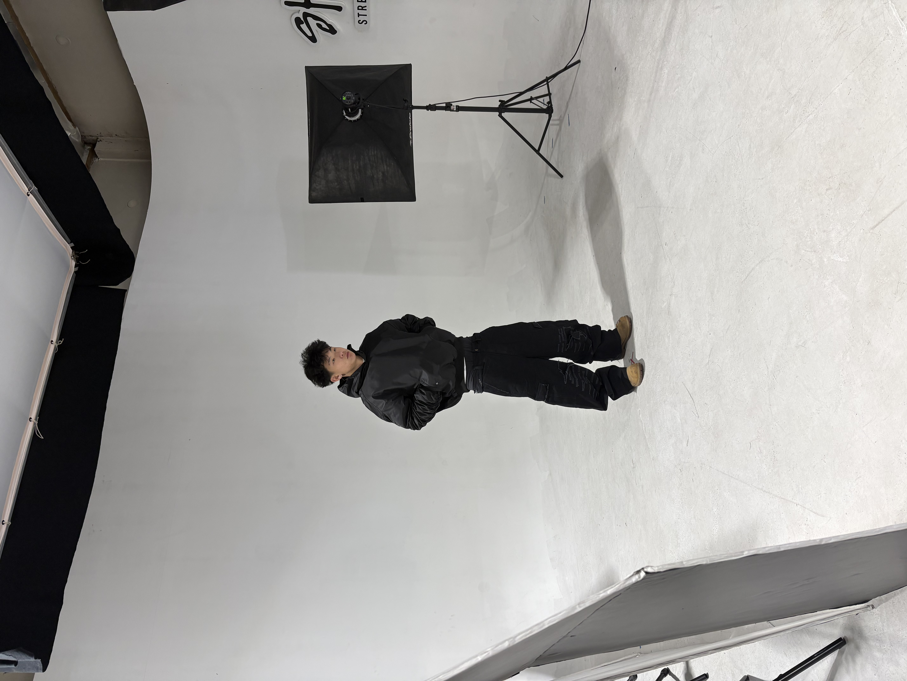
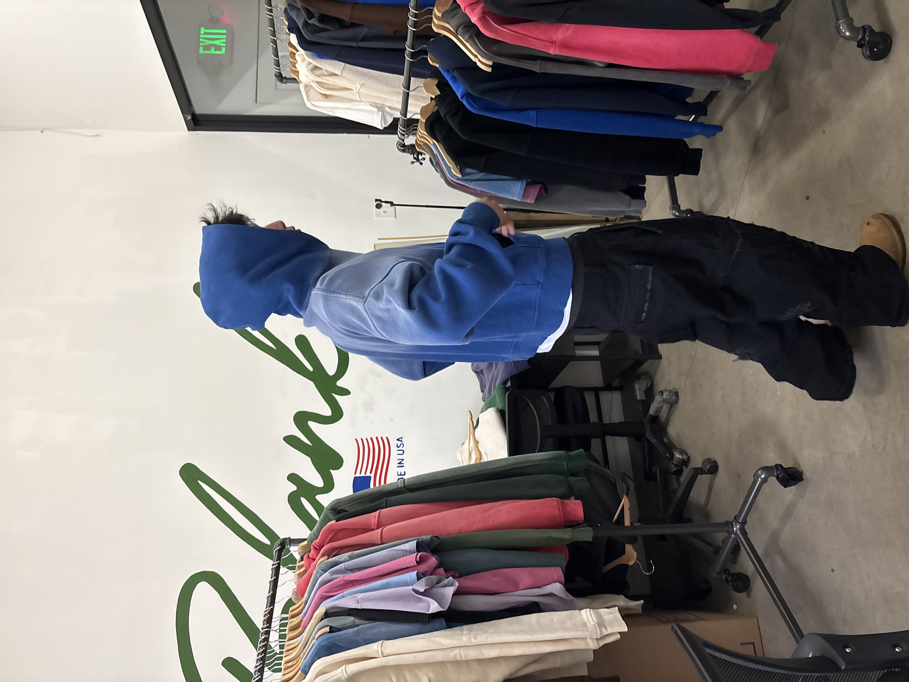
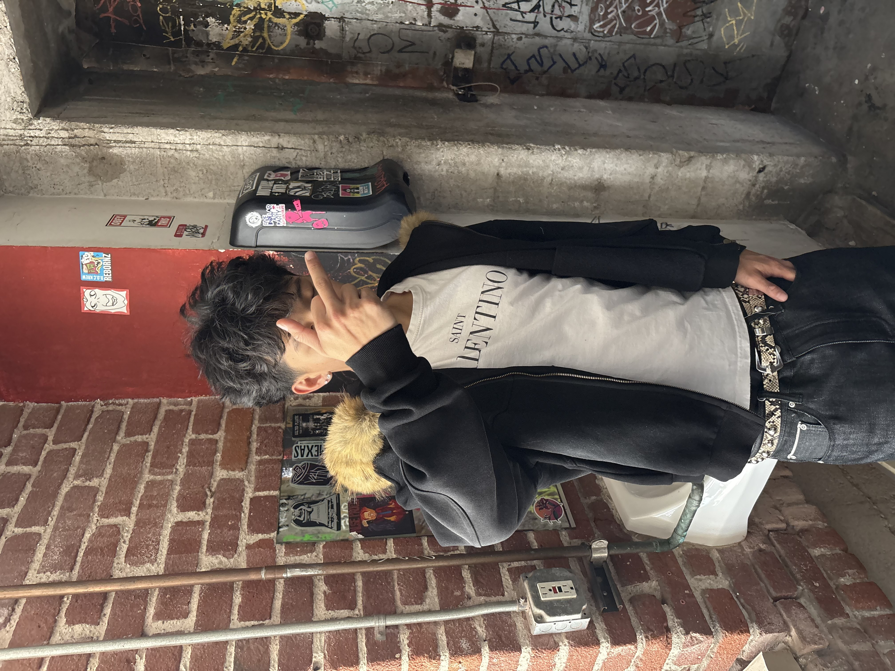
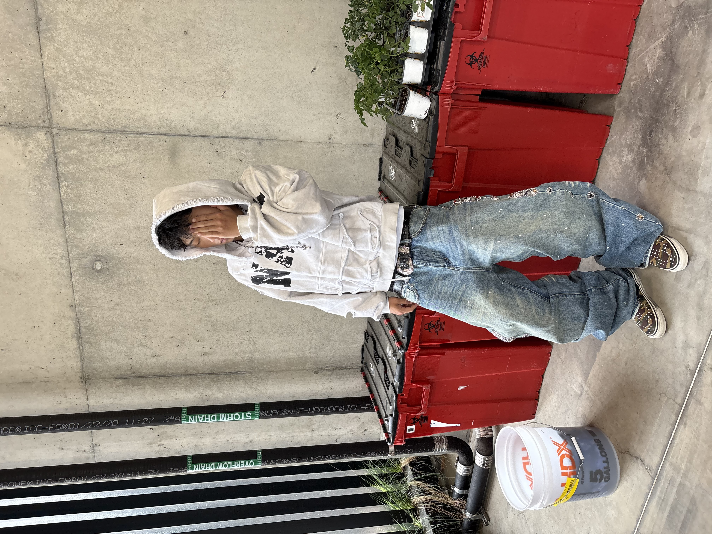

Joshua Lam is a Business Administration major with a strong interest in marketing, brand development, and digital strategy. He focuses on building skills that combine creativity with business decision-making. Through both academic work and professional experience, he has developed a strong understanding of consumer engagement, communication, and social media marketing. His goal is to continue growing within the marketing industry while helping brands strengthen their identity and connect with larger audiences.
Alongside his studies, Joshua works as the Marketing Manager for Shaka Wear
, a streetwear and apparel brand known for its oversized fits and strong presence in fashion culture. In this role, he helps manage marketing campaigns, social media content, brand promotion, and audience engagement strategies. He works closely with content creation and online branding to increase visibility and maintain a consistent image across platforms. His responsibilities include planning promotional content, tracking engagement performance, supporting campaign ideas, and helping strengthen the company’s online presence.
Joshua has experience creating short-form digital content designed for platforms such as Instagram and TikTok. His work focuses on producing engaging content that matches current trends while still reflecting the company’s identity. Several videos and campaigns he contributed to reached thousands of viewers and helped increase audience interaction. Through this experience, he has learned how fast-moving digital platforms influence consumer behavior and how important consistency is in modern marketing.
Beyond technical marketing skills, Joshua values leadership, adaptability, and communication. Working in fast-paced environments has taught him how to collaborate with teams, manage responsibilities under pressure, and solve problems efficiently. He believes successful marketing depends on understanding people, building trust, and creating content that feels authentic to the audience. He also understands the importance of analytics and performance tracking when developing strategies that produce measurable results.
As a student, Joshua continues to strengthen his knowledge of business operations, management principles, and marketing strategy through coursework and real-world experience. He is especially interested in brand marketing, digital advertising, and entrepreneurship. He enjoys learning about how companies grow, how consumer trends shift over time, and how businesses use marketing to stay competitive in changing industries.
Joshua plans to continue pursuing opportunities that allow him to expand his professional experience and leadership abilities. He hopes to work in corporate marketing, brand management, or digital media strategy after completing his degree. By combining education with hands-on industry experience, he aims to build a long-term career centered on innovation, communication, and business growth.
• Assisted with social media marketing campaigns and brand promotion
• Created short-form content for Instagram and TikTok platforms
• Helped increase audience engagement through digital marketing strategies
• Worked with content planning, branding, and online advertising
• Produced promotional social media videos for clothing brand campaigns
• Created engaging short-form content that reached thousands of viewers
• Assisted with online branding and digital audience growth
• Collaborated on marketing ideas and social media strategy
• Supervised and coached groups of children during sports and physical activities
• Led team-building exercises and maintained a positive learning environment
• Communicated with staff and parents regarding camper development and safety
• Helped organize daily activities and improve student participation



